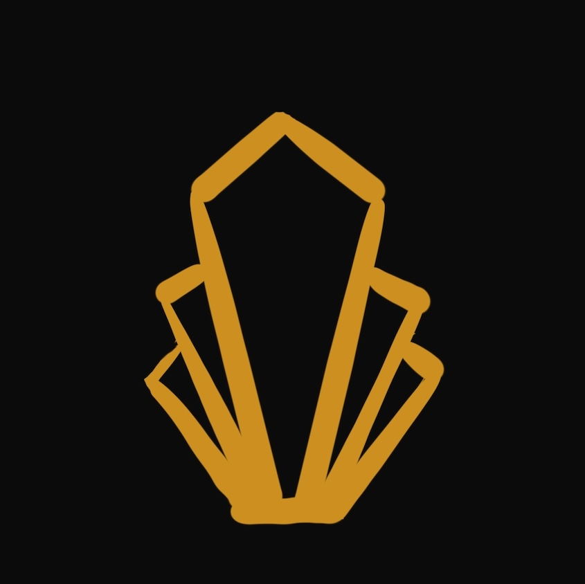

Hi, I'm Tiffany.
I’m a full-stack developer with six years of experience, specializing in building scalable web applications for startups and fast-moving teams. My background in art and product design gives me a unique perspective on creating intuitive, user-focused solutions that bridge technical execution with business goals.
I've worked across both startup and enterprise environments, consistently delivering clean, maintainable code and improving legacy systems with long-term sustainability in mind. I'm a fast learner who thrives in dynamic settings and adapts quickly to new tools and technologies.